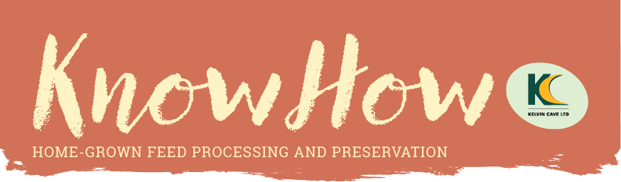

 |
|
Welcome to the Summer 2026 edition of KnowHow. As harvest approaches, here are ways to get more from home-grown and locally sourced feeds, from a 37% pre-lambing feed cost saving to preserving grain without drying.
Prefer the full magazine? Read the complete issue as a PDF |
| CASE STUDY |  | | 01. Sheep TMR bolstered by home-grown beans | | How Myerscough College cut pre-lambing feed costs by 37% by moving its ewes onto a home-grown TMR of wholecrop beans and crimped wheat, with no soya. | |
|
 | TECHNICAL ARTICLE With fuel prices high, Dr George Fisher finds preserving grain with Propcorn NC comes out around 40% cheaper than drying, with nutritional benefits too. Read more › |
|
 | TECHNICAL ARTICLE James Phelps of Barrettine on the pests that can wreck stored grain, how to spot the worst offenders, and how to prepare your store before harvest. Read more › |
|
 | CASE STUDY Inside the Mann family's new Cumbrian calf unit, purpose-built for health and performance as they move their dairy herd to Wagyu crossing. Read more › |
|
 | NEWS Kelvin Cave, Veolia and partners have found a way to preserve surplus supermarket food into a nutritionally dense new feed, soon available to UK farmers. Read more › |
|
 | CASE STUDY A Warwickshire farm's bespoke front-mounted IBC carrier and Silaspray switches from treating silage to treating grain in minutes. Read more › |
|
 | TECHNICAL ARTICLE With wrap costs and plastic pressures rising, we compare wrapping bales against preserving high-moisture hay with BaleSafe, and how to store it unwrapped. Read more › |
|
 | PRODUCTS Accurate moisture readings take the guesswork out of preservation. A look at the Wile 55 and Wile 25 meters, plus where to see us at the 2026 shows. Read more › |
|
Come and see us in 2026
Royal Highland Show, 18 to 21 June, Ingliston, Edinburgh
Royal Welsh Show, 20 to 23 July, Llanelwedd, Builth Wells, Powys | |
Kelvin Cave Ltd
Call us on 01458 252281
info@kelvincave.com | kelvincave.com |
You are receiving this because you are a Kelvin Cave contact.
Unsubscribe |